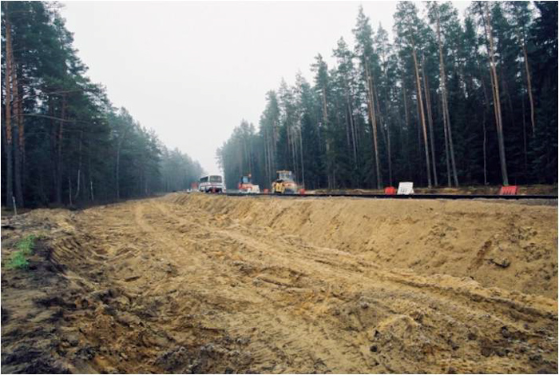
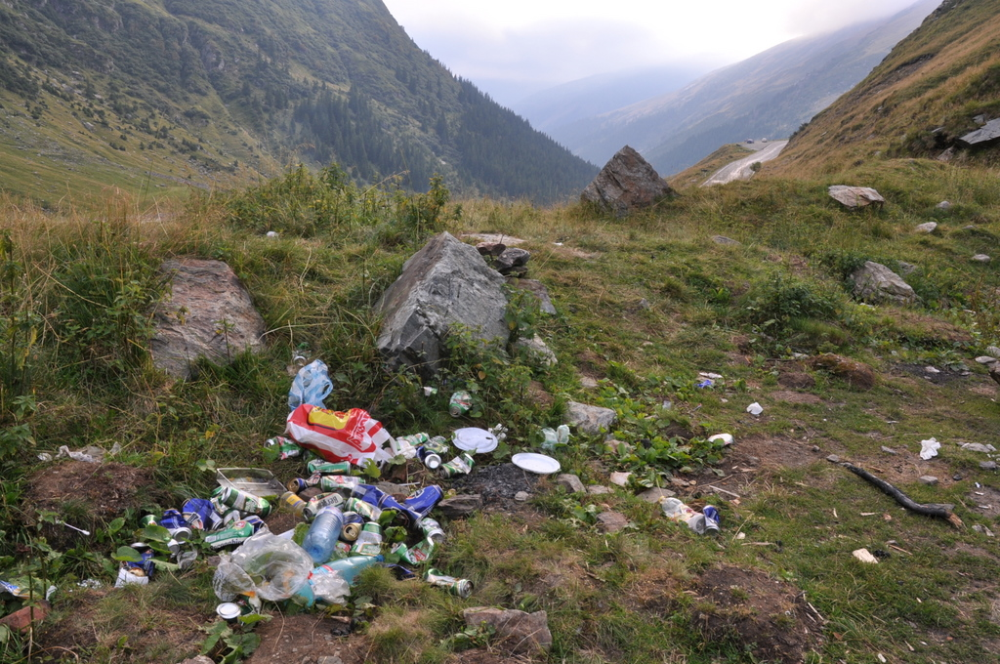

Ochrona
W Polsce niedźwiedź brunatny został objęty ochroną prawną w roku 1952. Zgodnie z ustawą z 16 kwietnia 2004 o ochronie przyrody (Dz. U. z 2004 r. Nr 92 poz. 880) oraz Rozporządzeniem Ministra Środowiska z dnia 28 września 2004 w sprawie gatunków dziko występujących zwierząt objętych ochroną (Dz. U. z 2004 r. Nr 220, poz. 2237) niedźwiedź brunatny w Polsce jest gatunkiem ściśle chronionym, wymagających ochrony czynnej. Zabrania się zabijania, okaleczania lub chwytania niedźwiedzi; przetrzymywania ich w niewoli, niepokojenia młodych, niszczenia gawr, a także przechowywania i sprzedaży skór lub innych części martwych osobników bez odpowiedniego zezwolenia. Dla dziko występujących zwierząt wymagane jest ustalenie ostoi, miejsc rozrodu lub regularnego przebywania. Ponadto wymagane jest tworzenie stref ochronnych o promieniu 500 metrów wokół gawr w okresie od 1 listopada do 30 marca.
Niedźwiedź brunatny został wymieniony w załączniku II i IV Dyrektywy Siedliskowej (92/43/EWG). Jest gatunkiem o znaczeniu priorytetowym, wymagającym ochrony w formie wyznaczenia specjalnych obszarów ochrony siedlisk Natura 2000. Niedźwiedź brunatny jest chroniony na mocy Konwencji Berneńskiej. W "Polskiej czerwonej księdze zwierząt" ma status NT (near threatened) - gatunek niższego ryzyka, ale bliski zagrożenia.
Zagrożenia
Europejski plan ochrony niedźwiedzia brunatnego wymienia fragmentację siedlisk i niepokojenie zwierząt w ostojach jako główne zagrożenia dla gatunku w Polsce. Te same czynniki oddziałują na populację niedźwiedzia brunatnego poza granicami naszego kraju, na terenie Słowacji i Ukrainy. Sugerowano, że obszar występowania gatunku w Polsce kurczy się ze względu na nadmierną eksploatację i fragmentację lasów oraz stale rosnącą presję człowieka. Dodatkowym problemem, najbardziej widocznym w Tatrach, stał się łatwy dostęp do niemal nieograniczonego źródła pokarmu - śmietnisk i pozostawionych przez człowieka odpadów. Niedźwiedzie przyzwyczaiły się do żerowania w pobliżu ludzkich siedzib, co w ostatnim dziesięcioleciu skutkowało nasileniem konfliktów pomiędzy niedźwiedziami a ludźmi. Ponad połowa udokumentowanych przypadków śmierci niedźwiedzi w polskiej części Karpat nastąpiła z winy człowieka. Jeżeli nie zostaną podjęte odpowiednie środki ochrony oraz stworzone plany zagospodarowania przestrzennego dla obszarów występowania gatunku, w przyszłości rozwój gospodarczy może mieć istotny wpływ na trwałość populacji niedźwiedzia brunatnego.
Utrata siedlisk
Niedźwiedź brunatny zamieszkuje obecnie wyłącznie obszary leśne. Jest gatunkiem o dużych wymaganiach przestrzennych, dlatego konieczne jest zachowanie ciągłości odpowiednich dla niego siedlisk. Ich utrata, degradacja i fragmentacja stanowią główne zagrożenie dla trwałości polskiej populacji. Dynamiczny rozwój obszarów górskich oraz rozbudowa sieci dróg i autostrad, brak lokalnych planów zagospodarowania, a w konsekwencji niekontrolowany rozwój infrastruktury turystycznej w polskich Karpatach niszczą cenne siedliska niedźwiedzia brunatnego. Istotnym problemem prowadzącym do obniżenia jakości zajmowanych siedlisk jest budowa inwestycji narciarskich wewnątrz rozległych kompleksów leśnych.
Płoszenie i niepokojenie zwierząt
Karpaty są popularnym miejscem wypoczynku. Sezon turystyczny trwa tam nieustannie przez cały rok, a skutki wzmożonego ruchu odczuwają niestety również niedźwiedzie. Turystyka to dynamicznie rozwijający się biznes. Można zatem spodziewać się zwiększenia liczby odwiedzających oraz rozwoju infrastruktury - budowy hoteli, schronisk górskich i stacji narciarskich. Rosnąca presja człowieka w Karpatach jest szczególnie widoczna w czasie wakacji i weekendów, gdy po szlakach wędrują tysiące turystów. Niepokojenie zwierząt może być spowodowane także przez intensywny wyrąb lasów oraz narastającą aktywność myśliwych. Leśne drogi są użytkowane przez amatorów rajdów samochodami terenowymi, głośnymi quadami oraz motocyklami crossowymi, którzy penetrując niedostępne fragmenty lasów, docierają do niedźwiedzich ostoi. Okres snu zimowego zbiega się ze szczytem aktywności narciarzy i użytkowników skuterów. Należy zauważyć, że większość ośrodków narciarskich położona jest w pobliżu ostoi niedźwiedzi, a hałas oraz wibracje emitowane przez skutery i wyciągi wraz z towarzyszącą im głośną muzyką, utrudniają zwierzętom zimowy odpoczynek.
Habituacja i warunkowanie pokarmem
Niektóre niedźwiedzie mogą zatracić skłonność do unikania kontaktu z ludźmi. Mogą przyzwyczaić się do obecności ludzi i zacząć kojarzyć ją z łatwym dostępem do pożywienia. Takie zachowanie zwierząt jest reakcją na wywołane przez człowieka zmiany warunków ich życia, zwłaszcza ułatwiony dostęp do pożywienia w śmietnikach. Na terenie Polski opisane zjawisko zaobserwowano po raz pierwszy w Tatrach. Już ponad dziesięć lat temu wprowadzono program monitoringu niedźwiedzi, ze szczególnym uwzględnieniem postępowania wobec osobników problemowych. Projekt polegał na odławianiu i obrożowaniu niedźwiedzi, odstraszaniu ich od ludzkich osiedli przy użyciu gumowych pocisków, usuwaniu odpadków oraz stosowaniu ogrodzeń elektrycznych chroniących pojemniki na śmieci. Czynności te przyniosły oczekiwany rezultat i odtąd sytuacje konfliktowe zdarzają się sporadycznie.
Śmiertelność
Niestety nadal zdarza się, że niedźwiedzie padają ofiarą nielegalnych polowań (czasem omyłkowo zastrzelone) i kłusownictwa, w tym również przy użyciu wnyków. Często śmierć ponoszą młode zwierzęta. W październiku 2007 roku w Tatrzańskim Parku Narodowym zwabiony jedzeniem młody niedźwiedź został zabity przez turystów. Jest to dramatyczny przykład ludzkiej bezmyślności. W najbliższej przyszłości można spodziewać się wzrostu śmiertelności w wyniku kolizji drogowych. Ranny niedźwiedź, który przeżyje zderzenie z samochodem lub pociągiem, może stwarzać zagrożenie dla ludzi. Taki przypadek miał miejsce w Tatrach Słowackich, gdzie potrącony przez pociąg elektryczny niedźwiedź, kilka dni po wypadku ciężko ranił turystę.